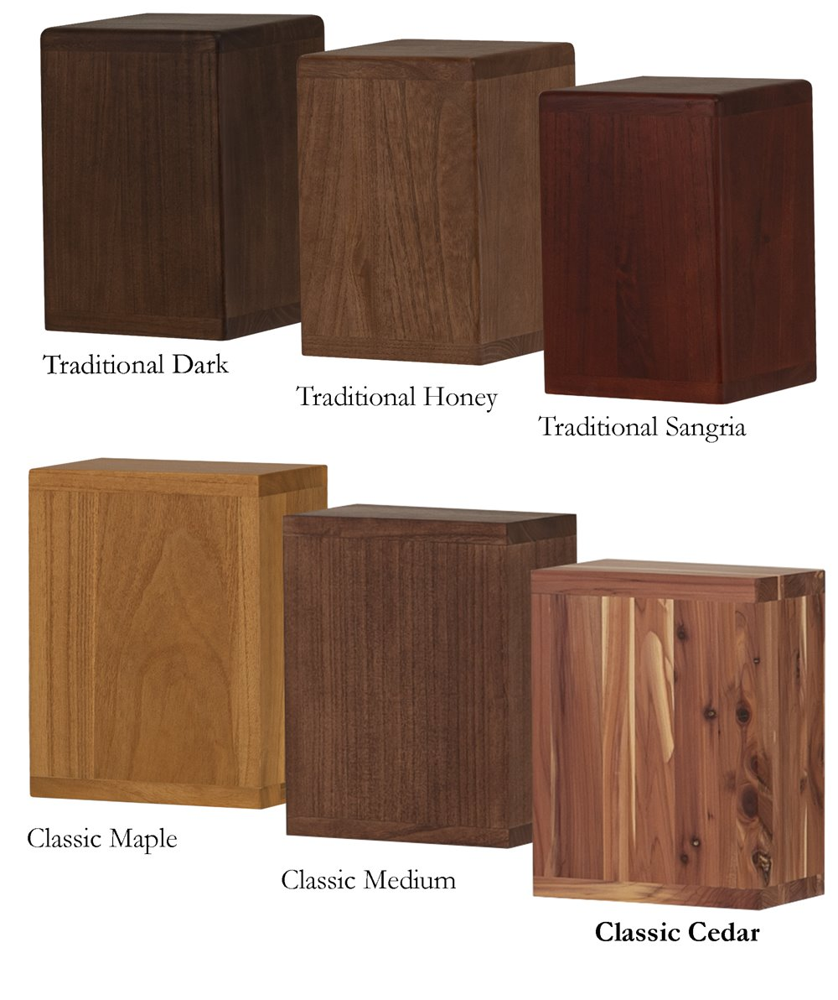
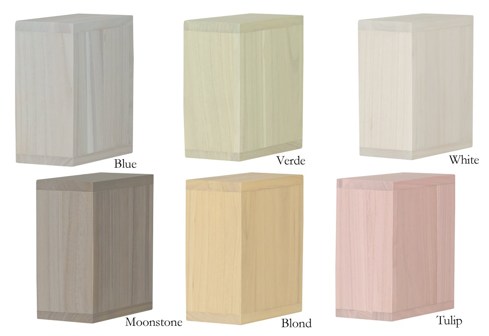
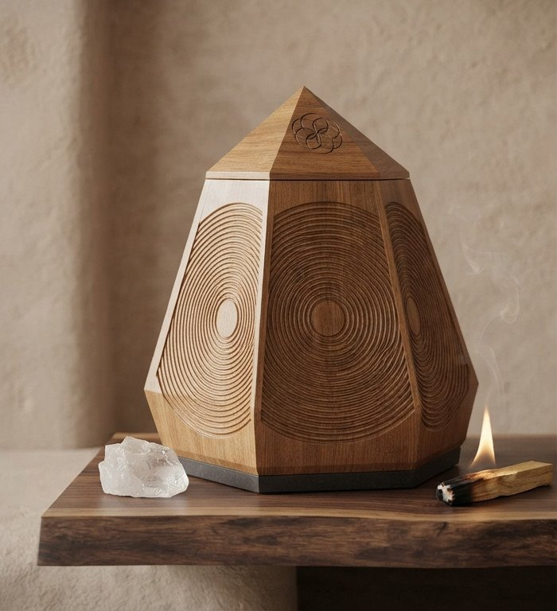
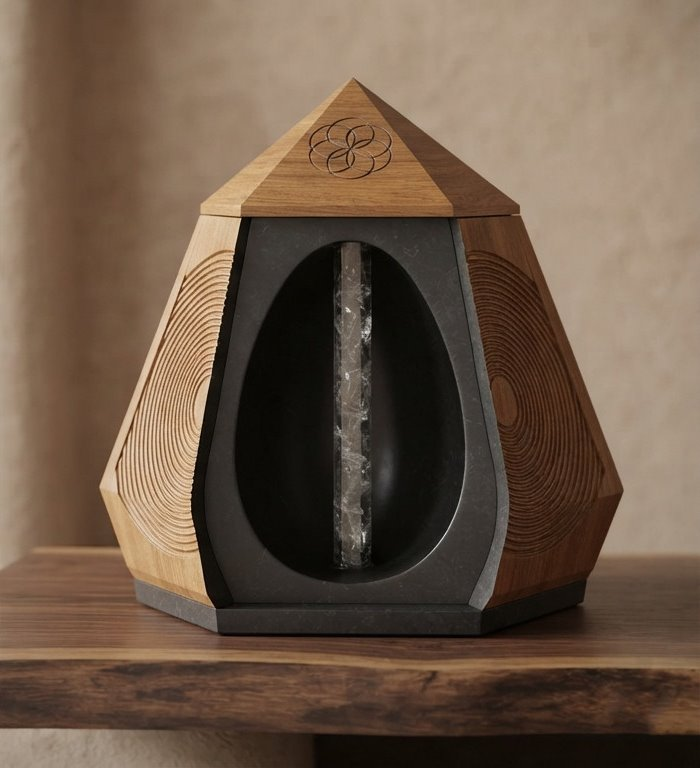

Urns & Vessels
Cremation urns for funeral homes and the families they serve, from traditional hardwood urns in a range of finishes to the Aethelgard, a sculpted vessel built around sacred geometry.
Traditional urns
New to the range. Traditional urns are coming to the catalogue now. Dimensions, capacity and interior detail are available on request while the full specifications are being finalised.

Traditional urns
Princess Tree & Cedar
A clean, squared urn in Princess Tree and cedar, offered in six finishes so a family can choose the tone that suits them. The cedar carries its own open grain and knot character, so no two are quite alike.

Traditional urns
The Pastel Collection
The same Princess Tree urn in a softer palette, for families who want something gentler than a stained hardwood. The grain stays visible through the finish rather than being painted out.
Spiritual vessels
The Aethelgard
A pentagonal resonance vessel, designed as a sanctuary rather than a container. Where the traditional range is quiet and familiar, the Aethelgard is for families who want the vessel itself to carry meaning.

Sacred geometry
Five sides, bound to the golden ratio
The exterior is a five sided truncated pentagonal pyramid, held to the proportions of the golden ratio. In sacred geometry the pentagon stands for aether, the fifth element of spirit and cosmos, and the concentric rings carved into each panel carry that idea across the whole surface.
It is built from dense premium tonewood in interlocking panels, with no metal fasteners anywhere in the construction, so the vessel reads as one continuous piece.

Inside the vessel
A chamber built to hold sound
The interior is carved into a smooth inverted dome, shaped after the acoustic chambers of ancient stone temples. It is lined with a crystalline quartz and polycast matrix that leaves the surface glass smooth, and a clear quartz pillar stands at the centre of the chamber.
- Capacity 220 cubic inches
- Exterior Premium tonewood, golden ratio geometry
- Interior Quartz and polycast matrix, quartz pillar
- Closure Interlocking capstone lid, friction fit
- Fasteners None, no metal in the build
New to the range
Urns are joining the catalogue
The urn range is new and still being brought online. Tell us what you need and we will confirm finishes, sizes and availability for your funeral home.